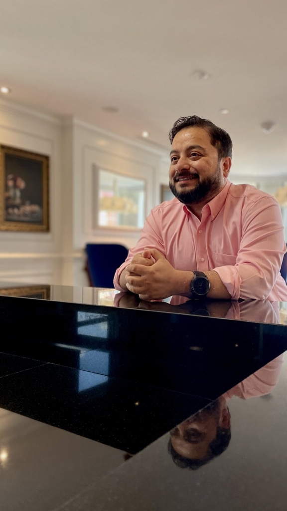

Unpacking Assumptions and Ambiguities in Canada's Algorithmic Impact Assessment (AIA) Tool
Canada's Algorithmic Impact Assessment is a tool designed to surface risks, but like any instrument, it carries its own assumptions. Through three specific case studies, this workshop investigates what those assumptions are, how they are located, and what practitioners, advocates, and policymakers can do about them.
Date27th June, 2026
Time3:30 - 6:00 PM
VenueMontréal, Canada
FormatIn-person
About the Workshop
Canada's Directive on Automated Decision-Making requires federal agencies to complete an Algorithmic Impact Assessment (AIA) before deploying automated systems to ensure that decision-making processes are fair and unbiased. While the published AIAs improve public accountability, especially in collecting critical answers to decision-making, they do not explicitly surface the reasoning behind those answers.
Many response in an AIA rests on assumptions, things taken for granted and not stated, and these assumptions breed ambiguity about what counts as harm, among others. The goal of this workshop is to bring those assumptions into the open: to name them, examine who they advantage, and ask what it would take to challenge them.
What to Expect
Participants will use tools from Informal Logic, the philosophical subfield that studies how everyday arguments actually work, to practice moving from what an AIA says, to what it is taking for granted, to what it is not asking. The workshop will produce three collective outputs:
A Public Report
A publicly available document covering the AIA's hidden assumptions and offering additional questions for advocates, researchers, and affected communities reading from the outside.
Applied Tool
A simple analytical tool for examining what accountability frameworks like the AIA take for granted, articulating the assumptions embedded in them, and making a case for why they matter.
Design for Reasoning
A shared open research question about how AI accountability frameworks should be redesigned so that reasoning, not just answers, is visible to people outside the institution.
Who Should Attend
This session is designed for three kinds of participants, each of whom relates to the AIA differently, though anyone interested in AIA is welcome to attend.
PractitionersMembers of public institutions that complete the AIA for designing, building, or procuring automated decision systems, and who bear responsibility for how the AIA tool is filled out.
AdvocatesThose who scrutinize a completed AIA on behalf of affected parties, with the aim of identifying where underlying assumptions obscure or misrepresent a system's actual risk or impact.
PolicymakersPolicy designers and researchers interested in how the tool itself could be improved — through better questions and or more precise framing that explicitly elicits assumptions.
Invited SpeakerProf. Michael BaumtrogAssociate Professor · Toronto Metropolitan University
Michael Baumtrog is an Associate Professor in the Department of Law and Business at the Ted Rogers School of Management. He is also co-editor-in-chief of the journal Informal Logic. His specializations are in reasoning and ethics, and he works to use both areas of study to make practical improvements in the real world.
Ramaravind's research focuses on how AI practitioners reason, and LLMs appear to reason, under ambiguous contexts related to AI safety.
Faisal M LalaniHead of Global Partnerships · Collective Intelligence Project
Faisal's work at the Collective Intelligence Project focuses on building the democratic infrastructure for AI development and governance.
Dipto DasPostdoctoral Fellow · University of Toronto
Dipto's research examines the sociotechnical impacts and bias of algorithmic systems to better understand how they shape discourse, civic identity, and access to information, particularly in low-resource and Global South contexts.
Ishtiaque's research questions the ethical foundations of AI systems and explores novel ways to develop AI through community-based participatory development.

Shion GuhaAssistant Professor · University of Toronto
Shion's work focuses on the friction between technical systems and public policy, specifically by auditing how algorithms function in real-world public-sector agencies.
Sharifa SultanaAssistant Professor · University of Illinois Urbana-Champaign
Sharifa's research looks to decolonize data, algorithm, and visualization practices in the Global South, and examines connections among faith, myth, and misinformation, designing to address fear, stigma, and exclusion.